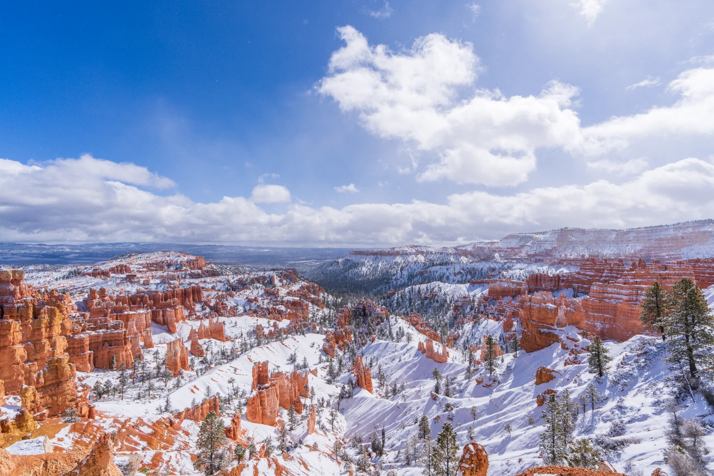
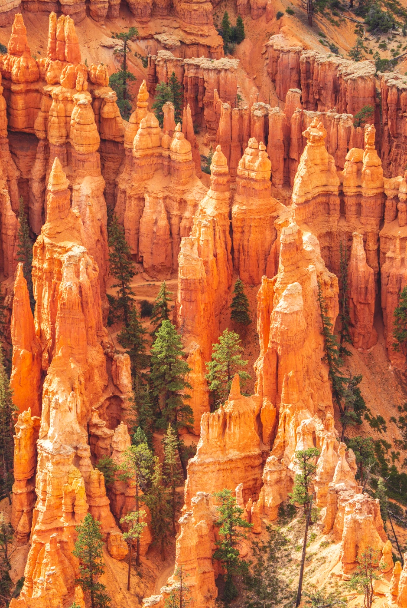

Photography
Bryce Canyon National Park
Land · Bryce Canyon National Park







Photographs by Jipeng Li.
Get in touch ↗Photography
Land · Bryce Canyon National Park


Photographs by Jipeng Li.
Get in touch ↗